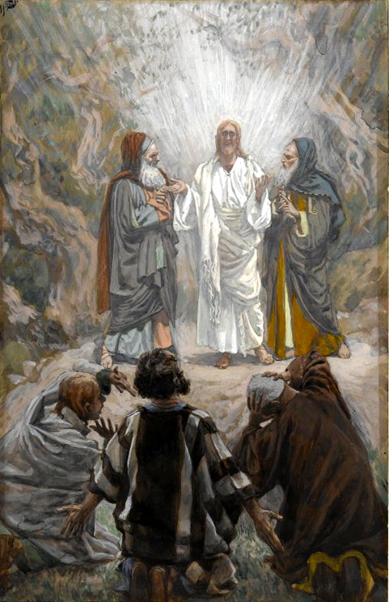

Lucas 9 — La Traducción Mister

⚠ Los tres del frente están vueltos de espaldas al lector, a propósito. Tissot pinta a Pedro, Santiago y Juan de espaldas, con el rostro oculto, justo donde los pone el propio texto de Lucas: ‘cargados de sueño’ hasta que ‘se despertaron del todo’ a algo que ya estaba ocurriendo (v32, ya en estas páginas) —testigos que llegan a mitad de la visión, no presentes desde su inicio. Moisés y Elías están pintados a mitad de conversación, no como iconos estáticos, a juego con un detalle propio de este Evangelio que ningún otro sinóptico conserva: hablaban del éxodos de Jesús, su propia partida, ‘que estaba por cumplir en Jerusalén’ (v31).
_-_James_Tissot_-_overall.jpg){kind=link}
Notas del traductor — versículo por versículo
Cada nota explica la elección de esta traducción y compara las versiones del estante. Las citas de versiones con derechos de autor se mantienen en frases cortas para comparación; la RV 1909 y la RV60 son de dominio público en su edición base.
⭐⭐ «Poder y autoridad» — el mismo par, invertido, que antes describió a Jesús mismo. Dynamis y exousia son las mismas dos palabras que la sinagoga de Capernaúm usó, maravillada, de que Jesús mandaba a los espíritus inmundos «con autoridad y poder» (Lucas 4:36, ya en estas páginas, donde ambas entradas del diccionario ya señalaban este mismo eco). Lo que allí asombró a los testigos aquí simplemente se entrega, sobre «todos los demonios» (v1) —no una porción menor, sino la cosa misma, dada a doce hombres que todavía no tienen reputación propia alguna.
⚠ La lista de Lucas, más estricta, coincide con Mateo contra Marcos. Ni bastón, ni bolsa, ni pan, ni dinero, ni túnica de repuesto (v3) coincide exactamente con el envío paralelo de Mateo, «ni sandalias ni bastón» (Mateo 10:10, ya en estas páginas), contra la propia versión de Marcos de este mismo envío, que permite expresamente ambas cosas: «nada… sino un bastón solamente… que llevaran sandalias» (Marcos 6:8–9, ya señalado allí como un desacuerdo sin resolver entre los tres). La TNM 2019 traduce aquí: «No lleven nada para el viaje, ni bastón ni bolsa de provisiones ni pan ni dinero; tampoco lleven dos prendas de vestir» —la misma prohibición completa.
El polvo sacudido (v5) es un testimonio contra un pueblo, no una despedida —la misma instrucción que da Mateo en el mismo envío (Mateo 10:14) y Marcos en el suyo (Marcos 6:11, ambos ya en estas páginas). Los tres sinópticos coinciden en este único punto exactamente donde discrepan sobre el bastón.
⭐⭐ El Herodes de Lucas está genuinamente perplejo; los de Marcos y Mateo ya conocen la respuesta. Aquí Herodes oye tres teorías en competencia y queda «sumamente perplejo» (diēporei), terminando en una pregunta real, «¿quién es este, pues?» (v9). El Herodes de Marcos, al oír las mismas tres teorías, se decide por una y la da por hecho: «A Juan, a quien yo decapité, este ha resucitado» (Marcos 6:16, ya en estas páginas); el de Mateo dice a sus propios criados el mismo veredicto tajante, sin mencionar siquiera las otras teorías: «Este es Juan el Bautista; ha resucitado de entre los muertos» (Mateo 14:2, ya en estas páginas). Tres tetrarcas, tres estados de ánimo distintos, sobre el mismo rumor.
⚠ La ejecución que este Evangelio nunca narra. Lucas le dijo al lector, tres capítulos atrás, que Herodes había encerrado a Juan (3:19–20, ya en estas páginas), pero el banquete, el baile de la hija, el juramento imprudente y la bandeja —la escena entera que Marcos cuenta en dieciséis versículos (Marcos 6:17–29, ya en estas páginas)— no aparece aquí en absoluto. La única confirmación que este Evangelio da de que Juan realmente ha muerto es esta única cláusula, en boca del propio Herodes, dicha como un hecho que ya carga y no puede deshacer.
⭐⭐⭐ «¿Quién es este?», preguntado por un círculo cada vez más amplio. Los discípulos hicieron su propia versión de la pregunta en la barca, «¿quién es este, pues, que hasta a los vientos y al agua manda?» (8:25, ya en estas páginas, que a su vez repetía la de los invitados de un fariseo un capítulo antes). Herodes la hace aquí, desde fuera, sobre rumores que llegan a su corte. Nueve versículos más adelante Jesús se la hará directamente a los Doce —primero qué dice la gente, luego qué dicen ellos mismos (vv18–20, más abajo)—: la misma pregunta, hecha por tres círculos cada vez más amplios, hasta que el tercero por fin la responde.
⚠ «Un pueblo llamado Betsaida» — o, en el texto mayoritario, «un lugar despoblado perteneciente a» uno. Los manuscritos más antiguos que sigue esta traducción leen simplemente «un pueblo llamado Betsaida» (v10); el texto bizantino posterior lee en cambio «un lugar despoblado perteneciente a un pueblo llamado Betsaida» —una lectura que parece armonizar con el propio «lugar desolado» de Mateo y Marcos para esta misma multiplicación (Mateo 14:13; Marcos 6:32, ambos ya en estas páginas), puesto que la multitud está a punto de necesitar un sitio sin tiendas cerca. Esta traducción conserva la lectura más difícil y más antigua: un pueblo real, no un desierto que copistas posteriores suministraron para que la geografía encajara.
⭐⭐⭐ El único milagro, antes de la resurrección, que narran los cuatro Evangelios. Mateo, Marcos, Lucas y Juan narran todos esta multiplicación (Mateo 14; Marcos 6; Juan 6, todos ya en estas páginas) —y solo Juan nombra a alguien dentro de ella: la aritmética desesperada de Felipe sobre doscientos denarios, Andrés señalando a un muchacho con panes de cebada, el grano del pobre (Juan 6:7–9). Lucas, como Mateo y Marcos, mantiene a todos sin nombre —«los doce» plantean el problema (v12), y «denles ustedes de comer» (v13) va dirigido al grupo, no a un discípulo en particular. El milagro pertenece a la multitud, no a un nombre dentro de ella.
Grupos de cincuenta, contados con sencillez. Marcos cuenta la misma multitud sentándose con la duplicación de sabor hebreo que esta traducción ya señaló dos veces en su propio capítulo, «grupo por grupo» y «filas, filas» (Marcos 6:39–40, ya en estas páginas). El griego de Lucas es más llano —un simple distributivo, «de unos cincuenta cada uno» (v14)—: la misma disposición sin el modismo semítico duplicado.
⭐⭐ Situada durante la oración, sin nombre de lugar alguno. Marcos sitúa esta escena «en el camino, hacia las aldeas de Cesarea de Filipo» (Marcos 8:27) y Mateo simplemente «la región de Cesarea de Filipo» (Mateo 16:13, ambos ya en estas páginas); Lucas no da ningún lugar, y en cambio enmarca la pregunta, como hará con la Transfiguración diez versículos después, alrededor de la oración —«mientras él oraba solo» (v18)—. Este Evangelio, y solo él, ya había señalado a Jesús orando en su propio bautismo (3:21), toda la noche antes de escoger a los Doce (6:12), y retirándose habitualmente a orar (5:16, todos ya en estas páginas) —un hábito que ningún otro Evangelio le atribuye con tanta frecuencia, y aquí enmarca los dos momentos hacia los que toda la historia venía avanzando.
⭐⭐⭐ Tres confesiones: dos de cuatro palabras griegas, y una mucho más larga. La de Marcos es «Tú eres el Cristo» (Sy ei ho christos), cuatro palabras, escueta —ya señalado en estas páginas que no lleva «ni bienaventuranza, ni roca, ni llaves» (Marcos 8:29). La respuesta de Lucas, «el Cristo de Dios» (ton christon tou theou), también son cuatro palabras, contadas igual —pero gramaticalmente distinta: un fragmento en acusativo que completa la pregunta, no una oración completa con verbo propio como la de Marcos. La de Mateo es más del doble de larga que cualquiera de las dos, «el Cristo, el Hijo del Dios viviente» (Mateo 16:16, ya en estas páginas, diez palabras griegas), y es la única que lleva la bienaventuranza sobre Pedro y la promesa de las llaves que sigue.
⭐⭐⭐ La misma fórmula de dos palabras vuelve dos veces más en este Evangelio —una vez como gloria, otra como burla. Nueve versículos más adelante la nube llamará a Jesús «mi Hijo, el Escogido» (v35, más abajo, ho eklelegmenos); en la cruz los gobernantes se burlarán, palabra por palabra, «si este es el Cristo de Dios, el Escogido» (23:35, ya en estas páginas) —la confesión de Pedro aquí, el propio nombramiento del Padre en el monte, y la burla de la multitud en la ejecución recurren todos a la fórmula idéntica, la última vez convertida en insulto.
⚠ No sigue ninguna reprensión de Pedro —este Evangelio no tiene la escena en absoluto. Tanto Marcos como Mateo cuentan el momento siguiente como Pedro apartando a Jesús y recibiendo por respuesta «Ponte detrás de mí, Satanás» (Marcos 8:33; Mateo 16:23, ambos ya en estas páginas). Lucas no tiene nada de esto: la confesión pasa directamente al anuncio (vv21–22, más abajo) sin ningún intercambio entre Pedro y Jesús —el mismo patrón de suavizar una escena más dura de Marcos ya señalado en 4:16–30, 6:6–11 y 8:19–21 (todos ya en estas páginas).
⭐⭐ «Es necesario» — el mismo verbo, por tercera vez. Dei es la palabra que el Jesús de doce años usó de su propia obligación, «me es necesario estar en la casa de mi Padre» (2:49, ya en estas páginas), y la que el Jesús adulto usó de su recorrido de predicación, «me es necesario anunciar también a las demás ciudades las buenas nuevas del reino de Dios, porque para esto he sido enviado» (4:43, ya en estas páginas). La misma necesidad rige ahora su muerte: el Hijo del Hombre debe padecer, ser rechazado, ser muerto y resucitar. Lo que obligaba al niño en el templo y al predicador en Galilea obliga también a la cruz.
«Al tercer día», no «después de tres días». Marcos escribe el mismo anuncio como meta treis hēmeras, «después de tres días», en sus tres anuncios de la pasión (Marcos 8:31; 9:31; 10:34, ya señalado allí); Mateo y Lucas escriben ambos «al tercer día» en los lugares correspondientes —un lapso contado de forma distinta aunque ambos describan el mismo suceso.
⭐⭐⭐ «Cada día» — la propia adición de Lucas a un dicho que tres Evangelios comparten casi palabra por palabra. Ni el relato de Marcos de este dicho, «tome su cruz, y sígame» (Marcos 8:34), ni el de Mateo, redactado de forma idéntica (Mateo 16:24, ambos ya en estas páginas), lleva kathʼ hēmeran, «cada día». Solo Lucas lo añade, convirtiendo un acto único y decisivo —tomar un instrumento de ejecución una sola vez— en una disciplina repetida, hecha de nuevo cada día. La TNM 2019 traduce el v23: «que tome su madero de tormento día tras día y me siga constantemente» —conservando la misma repetición diaria.
⭐⭐ «Salvar su vida» / «perderla» — el mismo par que Marcos, no la variación propia de Mateo. Psychē, vida o alma, ya está señalada en estas páginas por cambiar de palabra española a mitad de un mismo argumento en su caso más difícil (Marcos 8:35–37); aquí Lucas mantiene el mismo par salvar/perder que usa Marcos (Marcos 8:35, ya en estas páginas) a lo largo de los dos versículos, mientras que la propia versión de Mateo de este mismo dicho reestructura la segunda mitad de perder/salvar a perder/hallar (Mateo 16:25, ya en estas páginas) —tres Evangelios contando un dicho, dos pares de verbos distintos.
⚠ Lucas descarta la palabra que Marcos y Mateo conservan. Marcos y Mateo llaman ambos a esto metemorphōthē, «se transfiguró» (Marcos 9:2; Mateo 17:2, ya en estas páginas, donde la propia nota de Marcos ya predijo esta misma sustitución) —un verbo que, en el mundo griego más amplio, pertenecía a los dioses cambiaformas del mito pagano. Lucas busca en cambio algo más llano, «el aspecto de su rostro se hizo diferente» (v29), evitando por completo la palabra cargada, para una descripción que no podría confundirse con un mito.
⭐⭐⭐ «Su partida» — una palabra griega que está en exactamente tres versículos de todo el Nuevo Testamento. Exodos, buscada consonánticamente y sin contar su prima compuesta de Mateo 22:9, aparece solo aquí (v31), en Hebreos 11:22 sobre el propio éxodo de Israel de Egipto («el éxodo de los hijos de Israel», ya en estas páginas), y en 2 Pedro 1:15 sobre la propia muerte cercana de Pedro, «después de mi partida» (ya en estas páginas) —una carta que nombra este mismo monte dos versículos después. Tres escritores del Nuevo Testamento, una palabra rara, tres partidas distintas: la de una nación, la de Jesús y, en la lectura que atribuye la carta a Pedro, la de un apóstol. Esta traducción mantiene el sentido llano, «partida», en el propio versículo, en vez del más cargado «éxodo» que usa Hebreos 11 de Israel —el eco pertenece a la nota, no a la primera impresión del lector sobre la frase.
⭐⭐ Otra vez durante la oración. Ni Marcos ni Mateo mencionan la oración en ningún momento de esta escena; solo Lucas la enmarca —«mientras oraba» (v29)—, el mismo hábito ya señalado nueve versículos antes en la confesión de Pedro (v18, arriba) y que se remonta al bautismo, a la elección de los Doce y a los retiros habituales que solo este Evangelio registra.
⚠ La voz ha cambiado de persona y de contenido desde el río. En el Jordán hablaba a Jesús: «Tú eres mi Hijo amado; en ti tengo complacencia» (3:22, ya en estas páginas). Aquí habla de él, a los discípulos —«Este es mi Hijo» (v35)—, omite «complacencia» por completo, y añade lo único que la voz del bautismo nunca dijo: un imperativo, «a él escuchen», que cita casi palabra por palabra la propia promesa de Deuteronomio de un profeta como Moisés (Deuteronomio 18:15, ya en estas páginas) —dicho justo en el momento en que el propio Moisés está junto a Jesús y no dice nada. «El Escogido» (ho eklelegmenos) reemplaza el «amado» del bautismo y vuelve dos veces más en este Evangelio, arriba y en la cruz (véase la nota del v20).
Un monte sin nombre. Ni Marcos, ni Mateo, ni Lucas lo nombran jamás. La tradición lleva mucho tiempo proponiendo el monte Tabor; algunos geógrafos modernos prefieren el mucho más alto monte Hermón, más cercano a la región de Cesarea de Filipo donde se sitúa la escena anterior —y el texto mismo sencillamente no lo dice.
⭐⭐⭐ «Único» — el tercero y último de tres padres que prometió este Evangelio. La nota final de Lucas 7 nombró a tres padres cuyo hijo único este Evangelio iba a dar: el hijo único de la viuda de Naín, ya contado; la hija única de Jairo (8:42, ya en estas páginas); y el hijo único de este padre, aquí. Los tres aparecen solo en Lucas; el paralelo de Marcos a esta misma sanidad no tiene ninguna palabra semejante para el muchacho.
⭐⭐ «El muchacho» — el mismo sustantivo que ya ha nombrado a un esclavo y a una niña moribunda. Pais nombró al siervo del centurión («mi muchacho», 7:7) y, en su forma femenina, a la hija de Jairo («Niña, levántate», 8:54, ambos ya en estas páginas); aquí nombra al hijo de este padre (v42), completando el mismo patrón de tres escenas que monogenēs acaba de completar un versículo antes —un solo sustantivo griego para un esclavo, una niña moribunda y un muchacho con convulsiones, sin necesitar vocabulario aparte para ninguno de ellos.
⚠ Mateo nombra la enfermedad; Marcos y Lucas describen solo los síntomas. El relato mucho más breve de Mateo hace que el padre llame al muchacho «lunático», selēniazetai —el diagnóstico popular corriente para la epilepsia, atribuido a las fases de la luna (Mateo 17:15, ya en estas páginas). Ni el relato mucho más largo de Marcos (Marcos 9:14–29, ya en estas páginas, con el exorcismo fallido de los discípulos y el «creo; ayuda mi incredulidad» del padre) ni el de Lucas tienen palabra diagnóstica alguna —solo convulsiones, espuma, y una salida que deja al muchacho «maltratado» (v39).
El versículo bisagra. El v43 gira, a mitad de frase, del asombro de una multitud ante «la grandeza de Dios» al propio anuncio llano de Jesús sobre su traición —el vuelco de tono más brusco dentro de un solo versículo lucano hasta ahora, sin ningún espacio narrativo entre los dos.
⚠ Entendido por nadie, y esta vez nadie se atreve a preguntar. El primer anuncio (v22) no provocó ninguna reacción registrada; este se recibe con una incomprensión activa —«les estaba encubierto para que no lo percibieran» (v45)— y un temor que les impide hacer una sola pregunta. El relato de Marcos de este mismo segundo anuncio añade que además «tenían miedo de preguntarle» (Marcos 9:32, ya en estas páginas), la misma cláusula; Lucas la duplica con el encubrimiento, de modo que un significado oculto y un temor a oírlo se interponen a la vez.
⚠ Una discusión sobre grandeza, un versículo después de un anuncio de muerte que nadie se atrevió a preguntar. Lucas no suaviza el momento: los discípulos no logran preguntarle a Jesús sobre su propia traición inminente (v45) y de inmediato empiezan a discutir entre ellos quién es el mayor (v46). El paralelo de Marcos hace la misma yuxtaposición aún más dura, con Jesús preguntando directamente de qué discutían por el camino y los discípulos callando de vergüenza (Marcos 9:33–34, ya en estas páginas).
Un niño como respuesta, no como ilustración. Jesús no explica qué hace de un niño un modelo de grandeza; simplemente pone uno junto a sí (v47) e identifica recibir al niño CON recibirlo a él mismo y al que lo envió (v48) —tres recepciones fundidas en un solo acto, con el menor y el mayor invertidos en el mismo aliento. El mismo gesto con un paidion reaparece en la versión mucho más larga de Mateo de esta escena (Mateo 18:2–5, ya en estas páginas), que desarrolla en extenso lo que Lucas dice en un solo versículo.
⭐ «No está contra ustedes, por ustedes está» — la forma positiva de un dicho declarado en negativo en otro lugar. La queja de Juan (v49) y la respuesta de Jesús (v50) son palabra por palabra el mismo intercambio que cuenta Marcos (Marcos 9:38–40, ya en estas páginas). En otro lugar de este Evangelio, el mismo Jesús declara el principio idéntico en sentido inverso, «el que no está conmigo, contra mí está» (11:23, todavía no en estas páginas) —dos dichos que suenan contradictorios uno junto al otro pero responden a dos situaciones distintas: a un rival que expulsa demonios en el mismo nombre se le da el beneficio de la duda; a la oposición abierta y activa, no.
⭐⭐⭐ «Llevado arriba» — un verdadero hapax del Nuevo Testamento, y palabra propia de Lucas por partida doble. Analēmpsis está en exactamente un versículo de todo el Nuevo Testamento (v51) —buscada consonánticamente, su único pariente es el verbo analambanō, usado de la ascensión misma que Lucas narra un libro después: «este Jesús, que ha sido llevado de entre ustedes al cielo» (Hechos 1:11, ya en estas páginas). Un mismo autor, una misma raíz, un sustantivo que nombra el suceso aquí antes de que ocurra y un verbo que lo narra una vez ocurrido —el tipo de eco que solo Lucas, escribiendo ambos libros, podía sembrar a propósito.
⭐⭐⭐ La bisagra de todo el Evangelio. «Afirmó su rostro para ir a Jerusalén» (v51) abre la larga sección central de este Evangelio que llega hasta la entrada a Jerusalén, nueve capítulos más adelante —camino, dichos y encuentros casi sin paralelo en el itinerario mucho más corto de Marcos. Todo, desde aquí hasta el capítulo 19, transcurre, en el propio marco de Lucas, sobre este único camino.
⚠ Un verdadero nudo textual: dos frases que los manuscritos más antiguos no tienen. El texto posterior, mayoritario, añade una cláusula a la pregunta de Santiago y Juan en el v54 —«fuego del cielo que los consuma, como también hizo Elías» (conservada por la KJV inglesa: «even as Elias did»)—, haciendo explícita la alusión a 2 Reyes 1, donde Elías hace bajar fuego sobre dos compañías de soldados. El mismo texto posterior añade luego la respuesta completa de Jesús en los vv55–56: «Ustedes no saben de qué espíritu son; porque el Hijo del Hombre no vino para destruir las almas de los hombres, sino para salvarlas». Ninguna de las dos cláusulas está en los testimonios más antiguos que sigue esta traducción, y ambas se leen como una vieja glosa marginal —la alusión a Elías hecha explícita, y luego respondida con la misma frase que este Evangelio bien podría haber querido decir desde el principio— que una mano posterior incorporó al propio texto. Esta traducción imprime la lectura más breve y reporta aquí la más larga en vez de adoptarla.
Una aldea que no lo recibe, por una razón que este Evangelio no explica. La hostilidad de larga data entre judíos y samaritanos es el trasfondo más probable —una aldea samaritana que niega hospitalidad a peregrinos galileos de camino al templo de Jerusalén, la misma ciudad que los samaritanos rechazaban como lugar de adoración—, pero el texto mismo declara solo el rechazo, no su motivo, y la aldea nunca se nombra.
⭐⭐ Mateo cuenta dos de estos tres dichos mucho antes, ante la misma tormenta en el lago. El dicho de las zorras y los nidos, y el intercambio de «deja que los muertos entierren a sus propios muertos», aparecen también en Mateo, pero ocho capítulos antes en su propio orden, justo antes de que Jesús cruce el lago hacia la tormenta (Mateo 8:18–22, ya en estas páginas) —una escena que Lucas coloca tres capítulos antes de esta (8:22–25, ya en estas páginas). Los dos Evangelios coinciden en los dichos y discrepan en capítulos sobre cuándo se dijeron; esta traducción reporta la divergencia en vez de armonizar las dos cronologías en una sola.
⭐⭐⭐ El tercer seguidor, y el dicho del arado, pertenecen solo a Lucas. Ni el hombre que pide despedirse primero de su familia, ni la respuesta de Jesús sobre la mano en el arado (vv61–62), tienen paralelo alguno en Mateo, Marcos o Juan. La imagen que cierra este conjunto sobre el costo del discipulado es, por tanto, la propia adición de Lucas a un par de dichos que comparte con Mateo.
⚠ «Deja que los muertos entierren a sus propios muertos» responde a una petición que la propia Ley honraría. Enterrar a un padre estaba entre los deberes filiales más serios de la Ley (compárese el permiso a José en Génesis 50:5–6, ya en estas páginas); la respuesta de Jesús no niega que el deber exista, pero lo subordina a una urgencia que no espera ni siquiera el funeral de un padre —la misma pretensión absoluta que el dicho del arado hace en términos agrícolas en vez de filiales, dos versículos después.
Patrones que vale la pena continuar
Donde esta traducción mantiene las palabras exactas / distintas: poder y autoridad para dynamis y exousia, el mismo par que Lucas 4:36 ya usó de Jesús (v1); Maestro para Epistata, extendido a su quinta y sexta apariciones en el Nuevo Testamento (vv33, 49); el muchacho para pais, su tercera persona distinta en este Evangelio (v42); único para monogenēs, su tercera y última aparición lucana (v38); vida para psychē, mantenido en el par salvar/perder que comparte con Marcos y no con Mateo (vv24–25); partida para exodos, palabra de tres apariciones en el Nuevo Testamento, mantenida llana en el versículo y explicada en la nota (v31); y llevado arriba para analēmpsis, un verdadero hapax respondido un libro después por su propio verbo en la ascensión (v51).
Ecos pagados. Las dos promesas del cierre de Lucas 7 se completan aquí: monogenēs alcanza su tercer y último padre (v38), y pais nombra a su tercera persona, un esclavo, una niña moribunda y ahora un muchacho con convulsiones (v42). El «¿quién es este, pues?» de los discípulos en la tormenta (8:25) y la propia versión de Herodes de la pregunta (v9) quedan ambos respondidos, por fin, por la confesión de Pedro (v20) —el tercer y último círculo al que este Evangelio venía haciendo la misma pregunta, ensanchándola durante tres capítulos. Y la fórmula de dos palabras de esa confesión, «el Cristo de Dios», vuelve nueve versículos después como «el Escogido» de la nube (v35).
Ecos sembrados. «El Cristo de Dios, el Escogido» volverá una tercera vez, como burla, en la cruz (23:35). A Epistata le queda una aparición más en este Evangelio, en 17:13 —la única vez que la dice alguien fuera de los Doce. Y «llevado arriba» (analēmpsis, v51) queda respondido por su propio verbo en la ascensión misma, ya contada en el segundo volumen de Lucas (Hechos 1:11) —el raro caso de un eco que esta biblioteca puede señalar como ya pagado, en otro libro, antes incluso de que el capítulo que lo siembra fuera traducido.
A continuación: Lucas 10 — setenta y dos enviados por delante de él en parejas, la caída de Satanás «como un rayo», la pregunta de un experto en la ley respondida con un samaritano en el mismo camino que las aldeas de este capítulo le negaron, y dos hermanas en una sola casa discutiendo, sin decírselo la una a la otra, sobre cuál de ellas ha escogido bien.